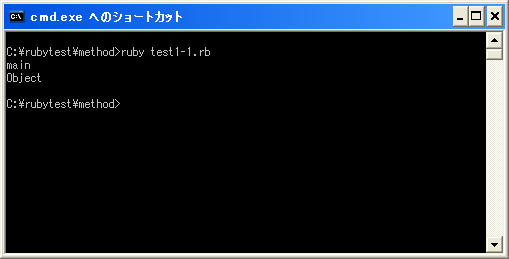

Rubyにおけるトップレベル
※下記は不正確な部分も含んでいる可能性もあります。また良く分からなければあまり気にしないで頂いても構いません。
オブジェクト指向のプログラミングではクラスを定義し、そのクラスからオブジェクトを作成するということから開始します。ところが今までのサンプルでは次のように実行するプログラムを単に記述していました。
print("Hello¥n")
このように特定のクラス定義の中に記述されたのではなく、クラス定義の外側の部分はトップレベルと呼ばれています。トップレベルにはクラスの定義などを記述できますし、プログラムが実行されるとトップレベルに記述されたプログラムが順に実行されて行きます。
例えばJava言語であれば、あるクラス定義の中に記述されたmainメソッドが実行されますが、Rubyにおけるトップレベルは厳密には何かのクラスのメソッドではありません。オブジェクト指向でありながらもメソッド以外で実行する処理を記述してあるのは変な気もしますが、あまり細かい事にはこだわっていないようです。
selfとmain
Rubyでは「self」と呼ばれる式が用意されています。「self」はメソッド内で実行されると、そのメソッドを実行しているオブジェクトを参照することが出来ます。
ではトップレベルで「self」を実行するとどうなるのでしょうか。トップレベルは厳密にはメソッドではないのですが、「self」を実行すると「main」と言うオブジェクトを返してくれます。
print(self.to_s)
では「main」と言うオブジェクトの元になっているクラスは何かを確認してみます。オブジェクトに対して「class」メソッドを実行するとそのオブジェクトをのクラスを返します。
print(self.to_s) print(self.class.to_s)
実行してみると「main」オブジェクトの元になっているクラスは「Object」クラスと表示されます。
これらのことから、Rubyではプログラムが実行されると「Object」クラスのオブジェクトである「main」を作成し、その「main」オブジェクトの中のとあるメソッド内に記述されたプログラムを実行しているようにも見えます。ただそう見えるだけで、実際にはトップレベルはトップレベルであり、トップレベルであっても「self」が何も返さないのはおかしいので「main」と言うオブジェクトを返すようにしているだけのようです。
トップレベルに定義されたメソッド
メソッドはクラスの中に記述するものですが、トップレベルの中にもメソッドを定義することが出来ます。トップレベルに定義されたメソッドは「Kernel」モジュールの中に追加されることになっています。(どういう仕組みなのかは良く分かっていません)。
「Kernel」モジュールは全てのクラスの元になっている「Object」クラスに読み込まれています。その為、トップレベルに定義されたモジュールは、「Kernel」モジュールの中で既に定義されている「print」メソッドなどと同じようにどのクラス内からでも呼び出すことができます。またメソッドを呼び出す際に、呼び出し元のオブジェクト(レシーバーと呼ばれています)を省略できるので、あたかも関数のように使用することが可能です。
よって特定のクラス内ではなくトップレベルの位置にメソッドを定義すれば、関数のように使用できるメソッドを定義することが可能となります。
では次のページからメソッドの定義方法について確認していきます。
サンプルプログラム
では簡単なプログラムで確認して見ます。
#! ruby -Ku print(self.to_s + "¥n") print(self.class.to_s + "¥n")
上記のプログラムを「test1-1.rb」として保存します。文字コードはUTF-8です。そして下記のように実行して下さい。

( Written by Tatsuo Ikura )

著者 / TATSUO IKURA
初心者～中級者の方を対象としたプログラミング方法や開発環境の構築の解説を行うサイトの運営を行っています。